China Employee Termination 2026: Pulse Brief on Assurance Windows for Foreign Employers
Key takeaways
- Foreign employers should run China termination cases through three assurance windows: pre-notice, notice-day, and post-notice.
- Each window needs different controls; mixing them causes delays and avoidable disputes.
- The highest-risk errors occur when pre-notice legal/evidence gaps are discovered on notice day.
- If a window gate fails, progression should stop and remediation should be documented.
- This is a Pulse-style impact-first brief; legal depth is secondary in the appendix.
What changed and why this matters now
Many teams manage termination tasks in one continuous list. In practice, risk changes by timing window. What matters 48 hours before notice is different from what matters on notice day or after communication. Without window-based discipline, teams either over-check too early or under-check too late.
This run rotates to an assurance-windows format (distinct from prior chain/signal/handoff models). It helps foreign operators map control intensity to the right moment.
Plain-language legal context first
China employer-initiated termination generally requires lawful route selection and fact-consistent execution. For non-local operators, timing matters as much as substance: route and evidence certainty should be locked before notice; payout and communication controls must be exact at notice; closure defensibility must be proven after notice.
Local implementation can vary by city, so each window should include local-fit validation where needed.
Pulse assurance windows board
Window 1 — Pre-notice assurance (decision quality window)
Goal: confirm route legality, evidence coherence, and local-fit stability before any employee-facing action.
Required gates:
- route memo + fallback route,
- chronology reconciliation,
- local interpretation note,
- preliminary payout structure validated.
Fail pattern: teams rush to notice with unresolved route/evidence contradictions.
Window 2 — Notice-day assurance (execution quality window)
Goal: ensure payout/tax assumptions and communication controls are fully locked at release moment.
Required gates:
- final severance/IIT/social worksheet,
- payment approval and proof plan,
- approved script + spokesperson briefing,
- escalation protocol ready.
Fail pattern: payroll logic still moving while communication is delivered.
Window 3 — Post-notice assurance (defensibility window)
Goal: preserve reconstruction readiness and response capability if challenged.
Required gates:
- complete archive index,
- retrieval test pass,
- closure memo with decision timeline,
- lessons-learned capture.
Fail pattern: case marked complete without audit-ready records.
Why this model helps foreign operators
Window framing is intuitive for global teams because it aligns with real operating cadence. It also improves executive visibility: leadership can quickly see whether risk is pre-notice, notice-day, or post-notice rather than reading fragmented status updates.
For distributed teams, window gates reduce cross-functional confusion and prevent late-stage surprises.
Practical scenarios
Scenario A: pre-notice window not cleared
Route is mostly clear, but evidence contradiction remains open.
Outcome: Window 1 fails.
Action: hold notice and run evidence remediation sprint.
Scenario B: notice-day window unstable
Communication slot is scheduled, but IIT assumptions are still pending.
Outcome: Window 2 fails.
Action: delay notice until payroll/tax lock is final.
Scenario C: post-notice defensibility gap
Communication completed, but archive retrieval test fails.
Outcome: Window 3 fails.
Action: keep case open and remediate records before closure.
Daily operations SOP (window governance)
Step 1 — Classify case into current assurance window
- Assign window owner and backups.
- Confirm required gates for current window.
Step 2 — Validate window gates with evidence
- Check completeness, consistency, and freshness.
- Record gate status and links.
Step 3 — Enforce window holds
- Failed gate blocks move to next window.
- Escalate unresolved failures within SLA.
Step 4 — Execute window transition review
- Formal handoff when moving windows.
- Confirm all critical gates are passed.
Step 5 — Close with post-notice assurance audit
- Verify archive defensibility.
- Capture recurring window failures for process fixes.
Required document checklist
- Route memo + fallback route
- Contract and amendment records
- Chronology ledger + contradiction log
- Local interpretation note
- Severance/IIT/social worksheet
- Payment approvals + proof plan
- Script package + spokesperson briefing record
- Closure memo + archive index + retrieval test
- Window gate log (window, gate, owner, status, timestamp)
Exception handling playbook
- Window 1 gate failure near deadline: automatic delay + legal escalation.
- Window 2 payout uncertainty: no-communication rule until lock confirmed.
- Window 3 retrieval failure: closure denied until remediated.
- Repeated failures in same window: targeted control redesign.
- Owner unavailable: backup owner auto-activation.
System implementation notes
Implement window status as a primary field in workflow tools. Each window should have required gates with evidence links and SLAs. Add automation so notice-day actions cannot execute unless Window 1 is fully passed.
Track monthly metrics: gate failure rate by window, average remediation time, and dispute correlation by failed window type.
Common mistakes and prevention
- Mistake: treating all checks as same priority at all times.
Prevention: use window-specific gate priorities.
- Mistake: allowing notice-day execution with pre-notice uncertainty.
Prevention: hard transition gate between Window 1 and 2.
- Mistake: closing immediately after communication.
Prevention: mandatory Window 3 audit.
- Mistake: no trend review of repeated window failures.
Prevention: monthly window analytics.
What to do now
- Implement the 3-window assurance model across active China termination cases.
- Define gate criteria and owner accountability per window.
- Enforce no-notice rule until Window 1 is fully cleared.
- Add window-failure dashboard to weekly governance.
- Use window trends to improve SOP and staffing.
What to watch next
- Window 2 failures caused by payroll/tax lock delays.
- Window 1 local-fit uncertainty in city-sensitive cases.
- Window 3 archive gaps after high-volume periods.
Executive weekly view (fast)
Use one one-page weekly window report: number of open gates by window, oldest unresolved gate, top repeated failure reason, and count of cases blocked from notice. This keeps leadership focused on timing-critical risk instead of generic activity volume.
FAQ
1) Why use assurance windows?
They align control focus with timing risk and reduce late-stage surprises.
2) Which window is most critical?
Window 2 is often highest immediate risk because execution errors are hardest to reverse.
3) Can we move windows with one open gate?
Only with formal risk acceptance; default should be no.
4) How often should gate status update?
At least once per transition and whenever material facts change.
5) Who owns window governance?
A cross-functional operations lead with legal/HR/payroll/compliance owners.
6) Does this add overhead?
It reduces net rework by sequencing controls at the right time.
7) Is this legal advice?
No. It is an operational governance framework.
Legal depth appendix (secondary)
This brief is anchored in the PRC Labor Contract Law framework and supplemented by practitioner and payroll references commonly used by multinational employers. Outcomes remain fact- and locality-sensitive; local validation is necessary where risk is material.
Termination payout and IIT handling should be validated against current local filing practice and advisor guidance. English-language summaries support alignment but should not replace localized case-level review.
Soft CTA
If your team needs a compliance-first operating model for China terminations, China-Payroll.com can help implement assurance-window governance, payroll lock controls, and defensibility workflows for foreign employers.
Disclaimer
This content is informational only and does not constitute legal, tax, or employment advice.
Sources
- National People’s Congress of China, Labor Contract Law of the PRC (English), accessed 2026-03-06: http://www.npc.gov.cn/zgrdw/englishnpc/Law/2007-12/13/content_1384064.htm
- ICLG, Employment & Labour Laws and Regulations: China, accessed 2026-03-06: https://iclg.com/practice-areas/employment-and-labour-laws-and-regulations/china
- Littler, Key Recent Developments in China’s Employment Law, accessed 2026-03-06: https://www.littler.com/news-analysis/asap/key-recent-developments-chinas-employment-law-china-us-comparative-perspective
- PwC Tax Summaries, China Individual — Taxes on Personal Income, accessed 2026-03-06: https://taxsummaries.pwc.com/peoples-republic-of-china/individual/taxes-on-personal-income
- China Briefing, China Human Resources and Payroll Guide, accessed 2026-03-06: https://www.china-briefing.com/doing-business-guide/china/human-resources-and-payroll
Need local employment support in China?
If you need a compliance-first partner for hiring, payroll, and risk controls in China, China-Payroll.com can help evaluate the right setup.
Image Prompt Pack
Create a 16:9 hero image for article title: 'China Employee Termination 2026: Pulse Brief on Assurance Windows for Foreign Employers'. Scene: global operations team evaluating workforce model options for China market entry. Include motifs: decision matrix, org…